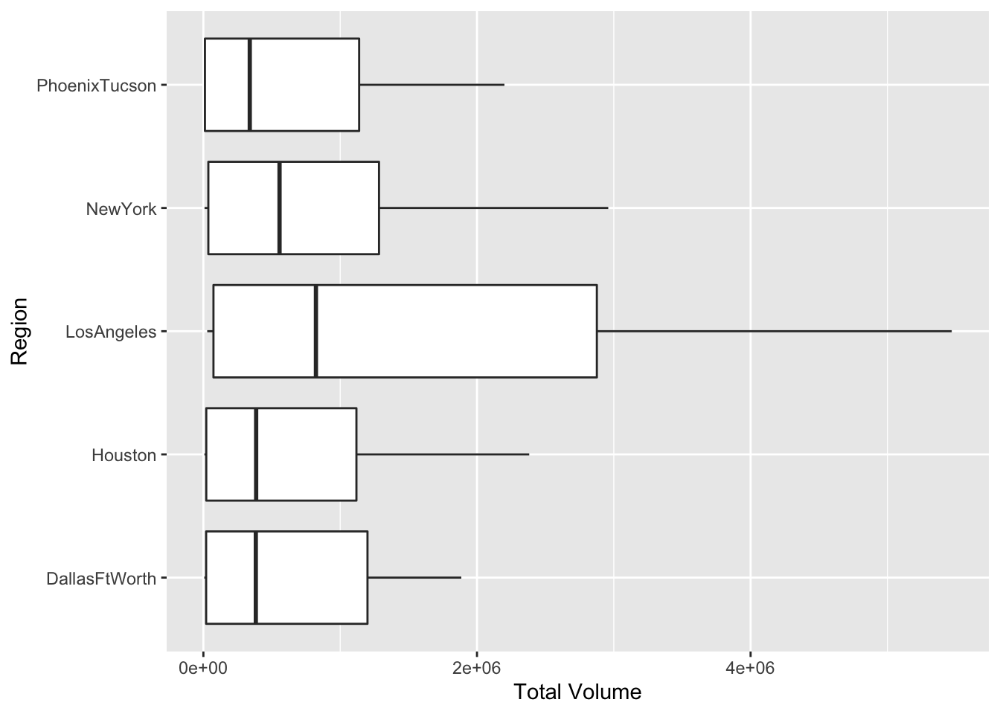
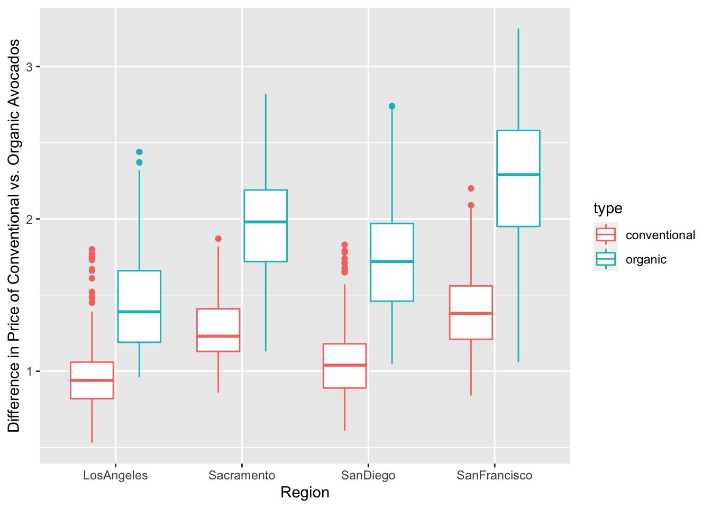
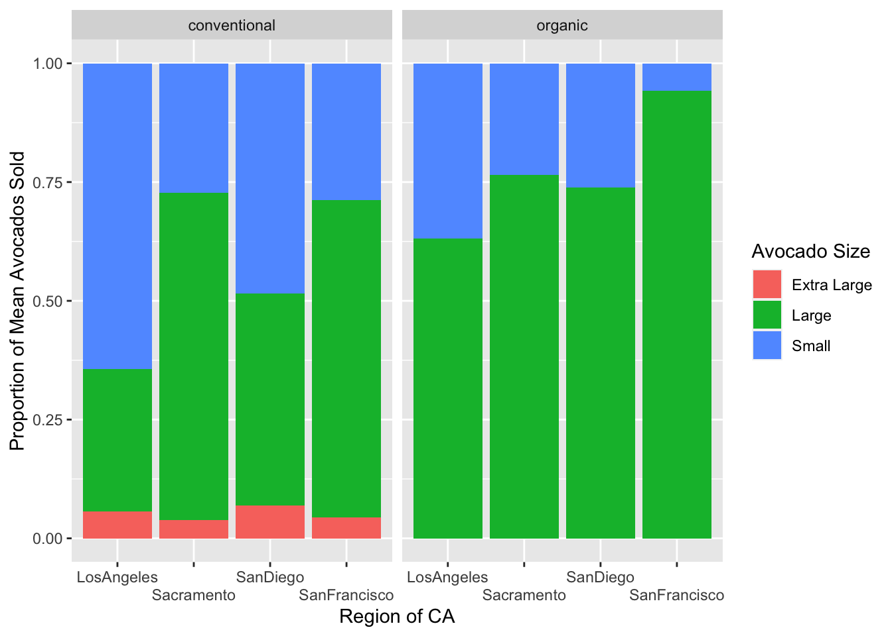

library(tidyverse)Lab 4: Avocado Prices
avocados <- read_csv(here::here("supporting_artifacts", "learning targets", "avocado.csv"))Question 1
This dataset represents the retail sales of avocados from 2015 to 2018 in the United States. Variables include the average price of an avocado, the type of avocado (conventional or organic), the total number of avocados sold as well as by size, the year, and the region.
Question 2
avocados <- avocados |>
rename("Extra Large" = `4770`,
"Large" = `4225`,
"Small" = `4046`)Question 3
region <- data.frame(region = c("Midsouth", "Northeast", "NorthernNewEngland", "Plains", "South", "SouthCentral", "Southeast", "TotalUS", "West", "WestTexNewMexico", "GreatLakes"))
avocados |>
semi_join(region, by = "region") |>
separate(col = Date, into = c("Year", "Month", "Day"), sep = "-") |>
filter(Year == 2017,
type == "organic") |>
group_by(region) |>
summarize(small = sum(Small)) |>
arrange(desc(small))# A tibble: 10 × 2
region small
<chr> <dbl>
1 TotalUS 6882024.
2 West 1870206.
3 SouthCentral 1717104.
4 Northeast 925832.
5 Southeast 285124.
6 GreatLakes 202488.
7 Midsouth 186396.
8 Plains 168583.
9 WestTexNewMexico 110911.
10 NorthernNewEngland 1249.The West sold the most organic, small Hass avocados in 2017.
Question 4
avocados |>
separate(col = Date, into = c("Year", "Month", "Day"), sep = "-") |>
group_by(Month) |>
summarize(total_volume = mean(`Total Volume`)) |>
arrange(desc(total_volume)) |>
slice_max(total_volume)# A tibble: 1 × 2
Month total_volume
<chr> <dbl>
1 02 1018825.The highest volume of avocado sales are in February.
Question 5
states <- data.frame(region = "California", "SouthCarolina")
avocado_metro <- avocados |>
anti_join(region, by = "region") |>
anti_join(states, by = "region")
top_five <- avocado_metro |>
group_by(region) |>
summarize("Mean Total Volume" = mean(`Total Volume`)) |>
arrange(desc(`Mean Total Volume`)) |>
slice_max(`Mean Total Volume`, n = 5)top_five |>
left_join(avocado_metro, by = "region") |>
ggplot(mapping = aes(x = `Total Volume`, y = region)) +
geom_boxplot() +
ylab("Region")
Question 6
cali <- data.frame(region = c("LosAngeles", "Sacramento", "SanDiego", "SanFrancisco"))
cali_new <- avocados |>
semi_join(cali, by = "region")
type_diff <- cali_new |>
group_by(region, type) |>
summarize(mean_price = mean(AveragePrice), .groups = "drop") |>
pivot_wider(names_from = region, values_from = mean_price)
type_grouped <- type_diff |>
summarize(across(.cols = "LosAngeles":"SanFrancisco", diff))
type_grouped# A tibble: 1 × 4
LosAngeles Sacramento SanDiego SanFrancisco
<dbl> <dbl> <dbl> <dbl>
1 0.479 0.695 0.673 0.814The price of organic versus conventional avocados is the most avocados is the most different in San Francisco.
cali_new |>
ggplot(mapping = aes(x = region, y = AveragePrice, color = type)) +
geom_boxplot() +
xlab("Region") +
ylab("Difference in Price of Conventional vs. Organic Avocados")
Question 7
avo_final <- cali_new |>
pivot_longer("Small":"Extra Large", names_to = "Avocado Size", values_to = "sales") |>
group_by(region, `Avocado Size`, type) |>
mutate(proportion = sales/`Total Volume`) |>
distinct(region, .keep_all = TRUE)
avo_final |>
ggplot(mapping = aes(group_by(region),
x = region,
y = proportion,
fill = `Avocado Size`)) +
geom_col(position = position_fill(reverse = TRUE)) +
facet_wrap(~type) +
scale_x_discrete(guide = guide_axis(n.dodge = 2)) +
xlab("Region of CA") +
ylab("Proportion of Mean Avocados Sold")
#website used to figure out how to stagger labels: https://datavizpyr.com/how-to-dodge-overlapping-text-on-x-axis-labels-in-ggplot2/